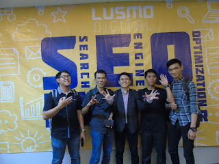

Memiliki Situs, toko online, isu online ataupun portal atau company profile merupakan langkah maju yang sudah dijalankan banyak perusahaan, kantor pemerintah, institusi, organisasi dan selebriti, lebih-lebih para pebisnis. Disisi lain, apakah Laman itu mempunyai pengunjung, apakah saat di Google diketik kata kunci (keywords) tertentu terlebih web bisnis, media online lainnya atau forum sudah tampil di halaman utama mesin pencari secara organik? Sekiranya belum, anda memerlukan penyedia jasa SEO terbaik dari pelaku serta spesialis search engine marketing berpengalaman. Master SEO Indonesia untuk melaksanakan analisis, hingga menjalankan optimasi (Search Engine Optimization) yang sempurna dengan teknik terupdate. Website bisnis diberi arahan tampil dengan dominan pada SERP (Search Engine Results Page) di halaman pertama mesin pencari, mendatangkan visitors, bersaing dengan para pesaing di internet, marketing online yang ideal target serta terukur
Merancang situs cocok dengan kebutuhan pengguna dunia maya serta mempertimbangkan laman Anda dapat diakses dengan mudah oleh mesin telusur, menyajikan informasi yang dibutuhkan pengguna interent dan biasanya menghasilkan hasil yang positif. Memonitor serta mengerjakan maintenance, membikin konten yang diutamakan untuk pengguna internet, bukan oleh robot mesin pencari. Hubungi Ahli SEO Indonesia Syamsul Alam pada situs resminya di SyamsulAlam.net untuk pembicaraan lebih jauh, menerapkan keahliannya serta pengalamannya, membangun Situs dari nol, mengelola laman yang sudah ada atau penyelamatan Laman yang mengalami degradasi sesudah dioptimasi dengan salah, terkena akibat updated algoritma terupdate Google Penguin, Google Panda atau Google Hummingbirds.
Master SEO Syamsul Alam di Tegal menawarkan layanan jasa SEO profesional, dengan search engine marketing untuk mendatangkan pengunjung, cuma-cuma traffics pada Situs bisnis. Social Media Marketing serta jasa optimasi video marketing serta foto. Hubungi ahlinya, Laman optimizer, search engine specialist, konsultan SEO Indonesia di Jakarta, membikin laman berfungsi menjadi dunia online marketer berprofesi 24 jam secara online.
Master SEO (Search Engine Optimization) Professional di Tegal
{}
Mempunyai Situs, warung online, berita online maupun portal atau company profile yaitu langkah maju yang telah dijalankan banyak perusahaan, kantor pemerintah, institusi, organisasi dan selebriti, lebih-lebih para pebisnis. Disisi lain, apakah Laman itu memiliki pengunjung, apakah saat di Google diketik kata kunci (keywords) tertentu secara khusus web bisnis, media online lainnya atau forum sudah tampil di halaman utama mesin pencari secara organik? Jika belum, anda memerlukan jasa SEO terbaik dari seorang pakar search engine marketing, Master SEO untuk melaksanakan analisa, sampai melakukan optimasi (Search Engine Optimization) yang sempurna dengan teknik terupdate. Website bisnis dibimbing tampil dengan dominan pada SERP (Search Engine Results Page) di halaman pertama mesin pencari Google, Yahoo dan Bing. Mendatangkan visitors, bersaing dengan para pesaing di internet, marketing online yang ideal sasaran.
Rahasia master seo dan pakar seo atau pakar seo terbaik di indonesia yang sedang menjadi pembicaran hangat ialah beragam teknik yang mereka lakukan untuk mengoptimasi sebuah website maupun blog sampai berada pada posisi terbaik di serp, baik itu google, yahoo dan bing. Tek perlu heran lagi mengapa sekarang banyak orang yang mengaku ahli seo dan master seo, hal ini di sebabkan oleh perkembangan bisnis online semakin meningkat tiap-tiap tahunnya.
Kebanyakan master seo indonesia memiliki pengetahuan dan teknik seo yang berbeda-beda. Melainkan pada kongkretnya seseorang bisa dikatakan master seo atau spesialis seo adalah mereka yang kerap kali menjuarai pelbagai kontes seo. Ketentuan ini ialah hal yang totaliter, karena kontes seo adalah arena yang bergengsi untuk menandakan siap yang mempunyai hak menerima gelar tersebut. Pakar seo sendiri sebenarnaya ialah sebuah gelar untuk seseorang yang memiliki pengalaman dan pengetahuan yang luas seputar seo seperti yang sudah dibeberkan pada website wikipedia perihal spesialis.
Resources Link:
- http://www.wseeker.com/kursus-seo-tegal/
- http://www.jatengcontentwriter.com/enak-gak-enak-jadi-penulis-artikel/
- https://www.foss-id.web.id/news/konsultan-seo-syamsul-alam/
- http://www.dailymotion.com/syamsulalam
- http://www.laanpere.eu/estcore/Jasa_Private_Blog_Network_(PBN)_-_081233838173_(Syamsul_Alam)2839073
- http://uccphilosoph.com/wiki/Pakar_SEO_-_Syamsul_Alam_(0812_3383_8173)8086081